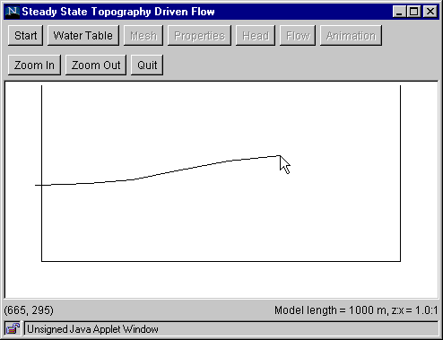

Step 2: Water Table
This step specifies the shape of the water table.
- Click the "Water Table" button to bring up the Water Table
Dialog Box, which reminds you to draw the water table from left to right.
- Click "OK." to close the dialog box.
- Starting from the space to the left of the
left boundary, click the cursor at points along the water table.
Proceed from left to right, and click the last point in the space
to the right of the right boundary. Note that the (x, z) coordinates
of the cursor are displayed at the lower left corner of the window.

Go to Step 3
Back to Step 1
Return to Introduction
|